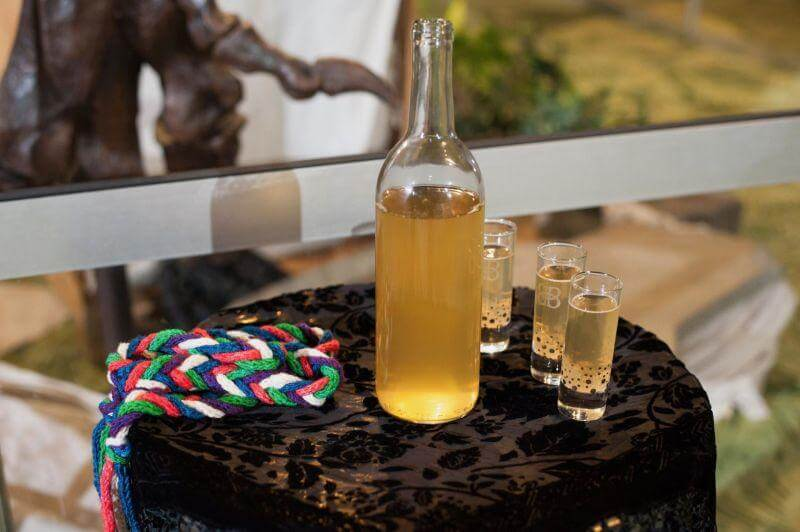

Mead Recipe

A bottle of mead with three shot glases
When we think of Norse we cannot but remember the mead that we usually see acompany the feasts. So, the next time you need to celebrate the victory over your enemies, you’ll have the best beverage to do so
Mead is one of the oldest recipes for fermented drinks, and despise it's association with the Norse it is considered a beverage older than agriculture, and record of this drink can be found through the world, with as few basic ingredients as honey and water, it's not surprise that this delicious drink expanded so widely.
Ingredient list:
- Honey - 2-3 ppunds for a gallon batch
- Yeast, better one strand that can handle alcoholic drinks
- (optional)Fruits, raisings or berries of your liking
Steps
- Sanitize everithing
- Pour 1/2 a gallon of non-chlorinated (filtered) waterin a large pot on medium heat.
- When warm, but not boiling, add the honey and stir until it dissolves.
- Turn the heat off. It may be a little foamy, but that's ok.
- In the meantime, put the berries (or any fruit of your liking), orange slices (skin and all), and raisins into the one gallon jug.
- Then, using the funnel, carefully pour the honey water mixture (technically called “must”) into the jug.
- Top off the jug with cool non-chlorinated (filtered) water, leaving at least 2 inches of head space on top.
- Then put the lid on the jug and gently mix everything around a bit. If you bought a jug that came with an airlock it may not come with a lid, so you’ll have to find a lid that fits or improvise a bit here. A solid cork (without a hole for the airlock) would work.
- Once it is less then 90° F you can pitch the yeast into the jug. For one gallon 1/2 package is enough
- Put the lid back on tightly and shake it up for several minutes.
- Put a little water in the airlock to the line, then put the rubber stopper into the jug.
- Keep the jug in a cool (not cold) dark place out of direct sunlight to ferment.depending on the ambient temperature it will take anywhere from 3-6 weeks.You want to wait until you don’t see any bubbles in the jug and your airlock is still before bottling.
- Bottle and now decide if you want to let it age, or if you want to drink it now!
SKAL
Home